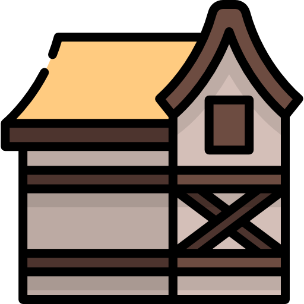

Voltar

Created by potrace 1.15, written by Peter Selinger 2001-2017
Converse com o
Sabius
Idade Média
Resumo para Estudos do ENEM
Contexto Histórico
A Idade Média é o período da história europeia entre a queda do Império Romano do Ocidente (476) e a tomada de Constantinopla pelos turcos otomanos (1453). É dividida em Alta Idade Média (séculos V a X) e Baixa Idade Média (séculos XI a XV).
Características da Alta Idade Média
Ruralização da economia.
Feudalismo como sistema político e econômico.
Influência da Igreja Católica na sociedade.
Formação dos reinos germânicos.
Características da Baixa Idade Média
Renascimento comercial e urbano.
Formação das monarquias nacionais.
Fortalecimento da burguesia.
Crises do sistema feudal, como a peste negra e revoltas camponesas.
Sociedade Medieval
A sociedade era hierárquica, dividida em três ordens: clero (oradores), nobreza (guerreiros) e camponeses (trabalhadores). O poder estava concentrado nos senhores feudais e na Igreja, que influenciava a cultura, educação e moral.
Importância para o ENEM
A Idade Média é relevante para entender a formação do mundo moderno, as origens do sistema capitalista e o papel das instituições religiosas e políticas no desenvolvimento europeu.